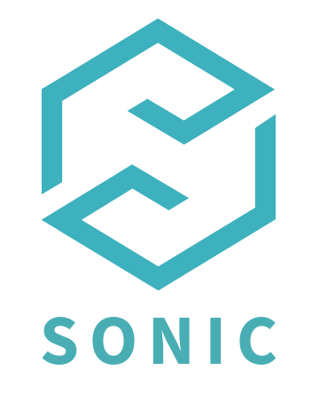
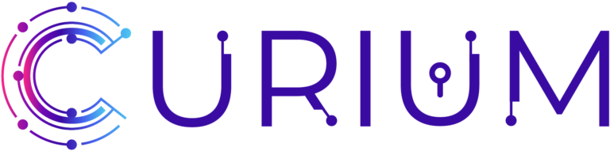
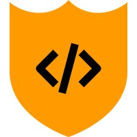
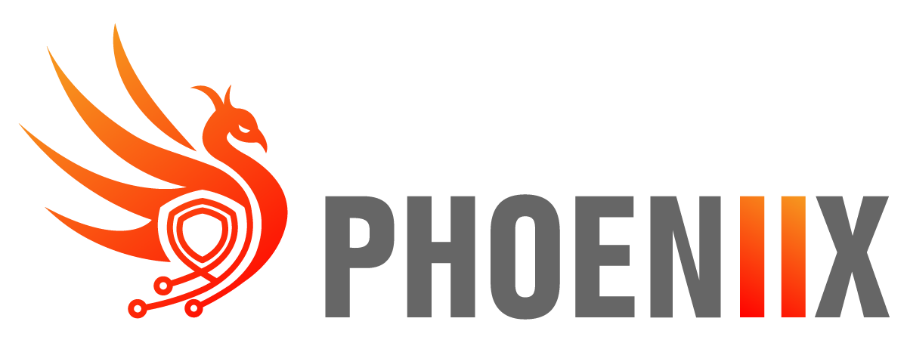
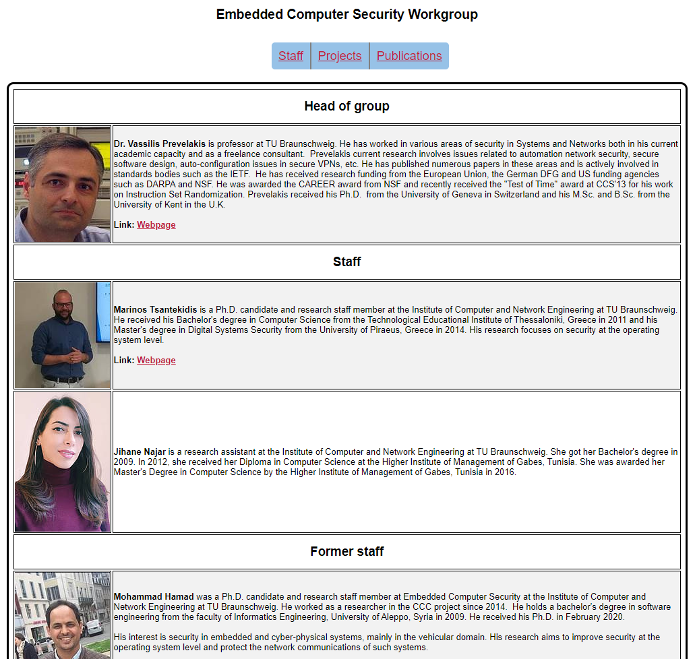
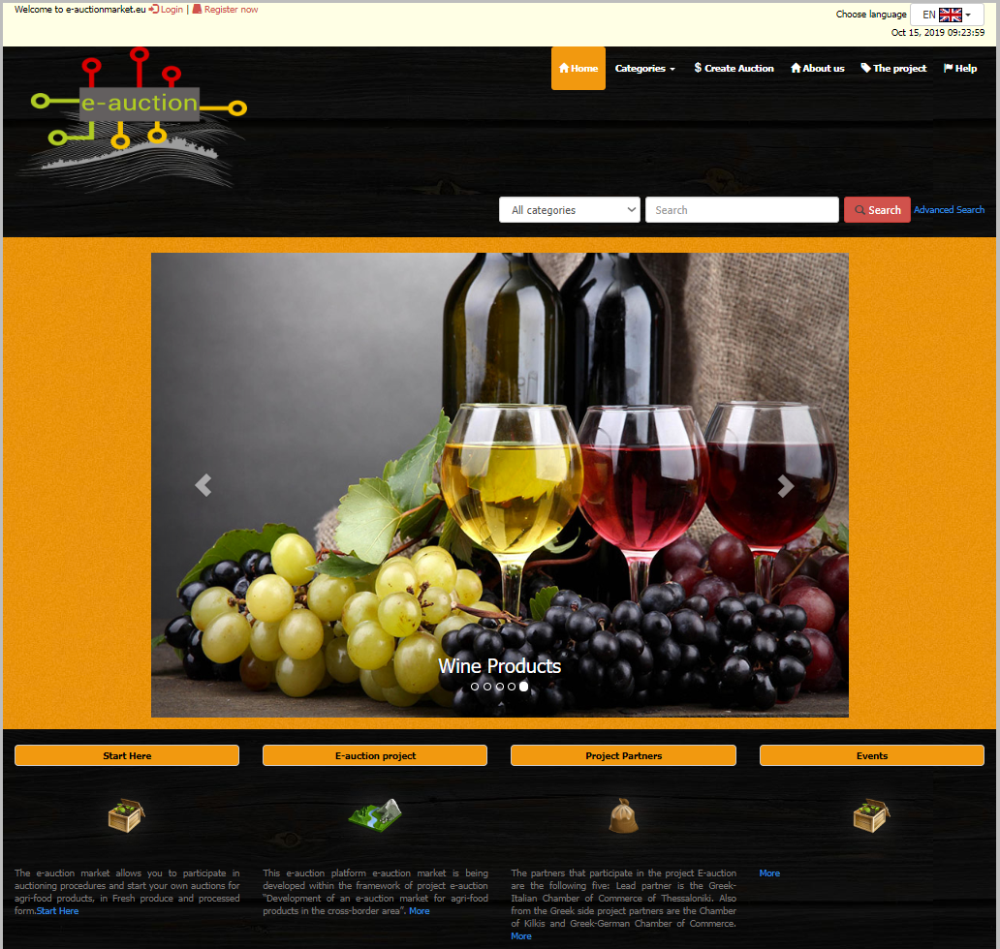
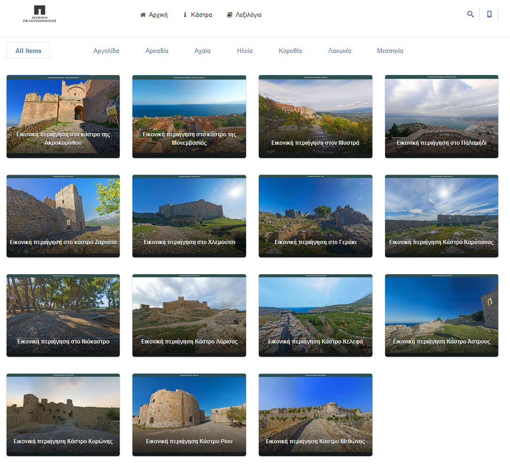
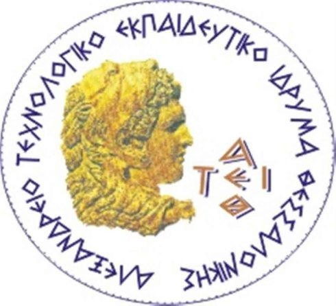

Hi there! I am Marinos Tsantekidis, a project manager/software engineer at AEGIS IT RESEARCH. I hold a Ph.D. from the Institute of Computer and Network Engineering at TU Braunschweig - Germany, where I worked under the supervision of Prof. Vassilis Prevelakis at the Embedded Computer Security Workgroup. I received my Master of Science degree in Digital Systems Security from the University of Piraeus, Greece in 2015 and my Bachelor of Science degree in Computer Science from the Technological Educational Institute of Thessaloniki, Greece in 2011. My research focuses on security at the operating system level. This is my personal website where you can find some info on me, including a list of my publications, prior working experience and education, etc.

SONIC is a European cybersecurity project focused on enhancing the protection and resilience of digital infrastructures. The project brings together innovative technologies and services to support earlier threat detection, faster incident response, and more robust cyber resilience in increasingly complex and heterogeneous environments. SONIC develops advanced capabilities for cyber threat intelligence, continuous monitoring, incident response, vulnerability and malware analysis, and post-incident investigation. These capabilities are designed to operate proactively, enabling the systematic assessment of system behaviour, the identification of emerging risks, and informed, timely security decision-making. Designed with the needs of modern Security Operations Centres (SOCs) in mind, SONIC solutions are intended to integrate seamlessly with existing SIEM, SOAR, and CTI platforms. They are scalable, portable, and privacy-preserving by design, supporting the secure and compliant use of sensitive data. Advanced analytics, automated testing mechanisms, and intuitive forensic visualisation contribute to improved situational awareness and operational efficiency. SONIC will bring its tools and services together through an intelligent cybersecurity marketplace. Powered by explainable AI-based recommendations, the marketplace will support the discovery and selection of appropriate cybersecurity solutions, facilitate compliance with European regulatory requirements, and promote collaboration across the European cybersecurity ecosystem.
SONIC is funded by the European Cybersecurity Competence Centre under Grant Agreement No. 101249631.
Project duration: 36 months. Started on January 1st, 2026.
Project URL: https://sonic-project.eu/

The CURIUM project envisions a more secure and resilient digital landscape by strengthening the security, privacy, and accountability of hardware and software products with digital elements. At its core, CURIUM introduces a novel Compliance Continuum – a suite of cybersecurity-oriented tools and services designed to provide information, guidance, trustworthy security testing, and streamlined compliance with the Cyber Resilience Act (CRA). By simplifying and automating compliance, CURIUM empowers European SMEs – especially micro and small enterprises – to conduct self-assessments, prepare for third-party certification, and reduce costs while accelerating time to market.
CURIUM is funded by the European Cybersecurity Industrial, Technology and Research Competence Centre under Grant Agreement No. 101190372.
Project duration: 18 months (extended to 21). Started on January 1st, 2025.
Project URL: https://curium-project.eu/

CONSOLE' s goal is to advance cybersecurity within the European software development industry. By creating a sophisticated automated platform, complete with integral modules and additional training services, CONSOLE is set to significantly cut acquisition costs for end-users, notably EU SMEs, while maintaining stringent cybersecurity for software applications, systems, and broader user base. The platform will deliver real-time, automated software testing in an authentic environment, deploying modern machine learning algorithms for endpoint detection, ML-enhanced visualisation, dynamic analysis frameworks. The collaborative network consists of 11 entities from 6 EU member states, structured into 5 work packages, each defined by unique objectives, deliverables, and timelines. CONSOLE is dedicated to profoundly improving software development security, underscoring confidentiality, integrity, and availability. Our strategy is not just technical but commercial too, focusing on a market-ready launch and penetration. Through comprehensive analysis, innovative development, stringent testing, and thorough validation within pilot programs spanning multiple sectors, CONSOLE is set to offer a reliable and robust integration into the software development process.
CONSOLE is funded by the European Union Digital Europe programme under Grant Agreement No. 101128070.
Project duration: 36 months. Started on November 1st, 2023.
Project URL: https://www.consoleproject.eu/
SecOPERA aims to provide a one-stop hub for complex OSS/OSH solutions delivering to a connected device designer, implementer and operator as well as any open-source software/hardware developer, the means to analyse, assess, secure/harden and share open-source solutions as those are integrated in an overall complex product developed for a networked connected environment. The SecOPERA hub offers to the open-source community a framework supporting the open-source DevSecOps lifecycle and generates secure open-source solutions along with appropriate, verifiable security guarantees.
SecOPERA is funded by the European Commission Horizon 2020 programme under Grant Agreement No. 101070599.
Project duration: 36 months. Started on January 1st, 2023.
Project URL: https://secopera.eu/

PHOENI2X aims to design, develop, and deliver a Cyber Resilience Framework providing Artificial Intelligence (AI) – assisted orchestration, automation & response capabilities for business continuity and recovery, incident response, and information exchange, tailored to the needs of Operators of Essential Services (OES) and of the EU Member State (MS) National Authorities entrusted with cybersecurity. Through the deployment PHOENi²X Cyber Resilience Centres (PHOENi²X CRCs), OES will gain: (i) enhanced Situational Awareness with AI-assisted Prediction, Prevention, Detection & Response capabilities, and business risk impact assessment-based prioritisation; (ii) proactive and reactive Resilience Automation, Orchestration, and Response (ROAR) mechanisms, providing Business Continuity, Recover and Cyber & Physical Incident Response; (iii) Increased Preparedness through relevant Serious Games and realistic Resilience Cyber Range (RCR) Assessment & Training; (iv) timely and actionable Information Exchange between OES, National Authorities and EU actors, leveraging interoperable and standardised alerting and reporting mechanisms and processes.
PHOENI2X is funded by the European Commission Horizon 2020 programme under Grant Agreement No. 101070586.
Project duration: 36 months. Started on July 1st, 2022.
Project URL: https://phoeni2x.eu/
SENTINEL bridged the security and personal data protection gap for European SMEs/MEs, by raising awareness and boosting their capabilities in the domain through innovation at a cost-effective level. This vision was realised by integrating tried-and-tested security and privacy technologies into a unified digital architecture and then applying disruptive Intelligence for Compliance. Combined with a well-researched methodology for application and knowledge sharing and a wide-reaching plan for experimentation for innovation, SENTINEL helps small enterprises feel considerably more secure and safeguard their and their customers’ assets.
SENTINEL was funded by the European Commission Horizon 2020 programme under Grant Agreement No. 101021659.
Project duration: 36 months. Started on June 1st, 2021.Ended on May 31st, 2024.
Project URL: https://www.sentinel-project.eu/
AI4HEALTHSEC delivered an Artificial Intelligence Dynamic Situational Awareness Framework (DSAF) able to (a) improve, intensify and coordinate the overall security efforts for the effective and efficient identification, evaluation, investigation and mitigation of realistic risks, threats and multi-dimensional attacks within the cyber assets and (b) support, prepare and help the Interdependent HCIIs participating in different types of Health Care Supply Chain Services. The DSAF supports (a) the HCIIs and the other stakeholders comprising the Health Care ecosystem to recognize, identify, model, and dynamically analyse cyber risks and (b) forecasting, treatment and response to advanced persistent threats and handle daily cyber-security and privacy risks, incidents and data breaches
AI4HEALTHSEC was funded by the European Commission Horizon 2020 programme under Grant Agreement No. 883273.
Project duration: 36 months. Started on October 1st, 2020. Ended on September 30th, 2023.
Project URL: https://www.ai4healthsec.eu/
PUZZLE PUZZLE brought together multidisciplinary competences and resources from the academia, industry and research community focusing on digital community, multi-dependency cyberphysical risk assessment, edge trust assurance services and remote attestation, distributed processing, programmable networking mechanisms, cybersecurity analytics, deep analysis and distributed machine learning, threat intelligence and blockchain technologies.
PUZZLE was funded by the European Commission Horizon 2020 programme under Grant Agreement No. 883540.
Project duration: 36 months. Started on September 1st, 2020. Ended on August 31st, 2023.
Project URL: https://puzzle-h2020.com/
CONCORDIA (standing for Cyber security cOmpeteNCe fOr Research anD InnovAtion) built the European Secure, Resilient and Trusted Ecosystem. The vision of CONCORDIA was to build a community with a strong cooperation between all stakeholders, understanding that all stakeholders have their KPIs, bridging among them and fostering the development of IT products and solutions along the whole supply chain. Technologically, it projected a broad and evolvable data-driven and cognitive E2E Security approach for the ever-complex ever-interconnected compositions of emergent data-driven cloud, IoT and edge-assisted ICT ecosystems.
CONCORDIA was funded by the European Commission Horizon 2020 programme under Grant Agreement No. 830927.
Project duration: 48 months. Started on January 1st, 2019. Ended on March 31st, 2023.
Project URL: https://www.concordia-h2020.eu/
SmartShip aims to bring together Information and Communication Technologies (ICT) of focused Universities, Research Institutions and Companies oriented into the maritime sector in order to build a holistic integrated ICT-based framework for the sustainable, individualized and completely automated energy management of ships.
SmartShip is funded by the European Commission Horizon 2020 programme under Grant Agreement No. 823916.
Project duration: 48 months. Started on January 1st, 2019.
Project URL: https://smartship2020.eu
THREAT-ARREST developed an advanced training platform incorporating emulation, simulation, serious gaming and visualization capabilities to adequately prepare stakeholders with different types of responsibility and levels of expertise in defending high-risk cyber systems and organizations to counter advanced, known and new cyber-attacks.
THREAT-ARREST was funded by the European Commission Horizon 2020 programme under Grant Agreement No. 786890.
Project duration: 36 months. Started on September 1st, 2018. Ended on August 31st, 2021.
Project URL: https://www.threat-arrest.eu
SHARCS (standing for Secure Hardware-Software Architectures for Robust Computing Systems) designed, built and demonstrated secure-by-design system architectures that achieved end-to-end security for their users. SHARCS achieved this by systematically analyzing and extending, as necessary, every hardware and software layer in a computing system.
SHARCS was funded by the European Commission Horizon 2020 programme under Grant Agreement No. 644571.
Project duration: 36 months. Started on January 1st, 2015. Ended on January 1st, 2018.
Project URL: http://sharcs-project.eu



Ph.D. dissertation on building a secure execution environment that leverages both kernel-side as well as user-space approaches in Linux, that work transparently and efficiently towards strengthening the runtime security of applications against several types of attacks.
Master thesis on developing a custom Android CAPTCHA mechanism (modification of Android's source code to intercept outgoing calls and SMS and display a CAPTCHA puzzle to solve, in order to continue)

Bachelor thesis on RFID (Radio Frequency Identification) systems security
Apart from being a security researcher / web developer, I enjoy being outdoors. In the winter, I like to go hiking in the mountains. During the warmer months I enjoy going camping, spending time at the beach and doing watersports.
However, I also like spending time at home. I follow many kinds of movies and television shows, I am an aspiring cook and I spend a large amount of my free time exploring the latest technolgy achievements.